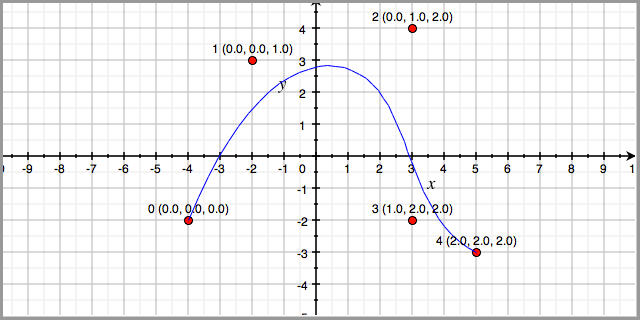

Gaining an intuitive understanding for b-splines is difficult without directly seeing the effects of different knot vectors and control point positions.
Curvey is a b-spline demo that allows the user to specify the degree of the spline, the number of control points, and the knot vector.
Many applications exist for playing around with b-splines, but they are all limited in one to all of the following ways:
Curvey uses the polar notation introduced by Lyle Ramshaw.
This section introduces b-spline curves using the polar notation. We assume that you have a basic understanding of b-spline cruves.
A b-spline curve can be defined by a set of control points and a knot vector. Consider the example below:
Here we have a cubic b-spline curve with five control points, (-4,-2), (-2,3), (3,4), (3,-2), (5,-3) and knot vector [0, 0, 0, 1, 2, 2, 2]. The control points are labeled with the control point number and with the polar points. For example, the control point at (3, 4) is the 3rd control point with polar points (0, 1, 2).
Curvey depends on Python. It has been tested on Python 2.6. To run the GUI version of Curvey, download the source and type:
You can also give Curvey an input file: